Chapter 4 Population structure
4.1 Principal Component Analysis (PCA)
PCA on the genotype matrix can be used to capture population structure. However, PCA can actually capture different kinds of structure (Privé, Luu, Blum, et al., 2020):
population structure (what we want),
Linkage Disequilibrium (LD) structure, when there are too many correlated variants (e.g. within long-range LD regions) and not enough population structure (see this vignette),
relatedness structure, when there are related individuals who usually cluster together in later PCs,
noise, basically just circles when looking at PC scores.
Capturing population structure with PCA is the second main topic of my research work (after polygenic scores).
In Privé et al. (2018), I introduced an algorithm to compute PCA for a
bigSNPobject while accounting for the LD problem by using clumping (not pruning, cf. this vignette) and an automatic detection and removal of long-range LD regions.In Privé, Luu, Vilhjálmsson, & Blum (2020), I improved the implementation of the pcadapt algorithm, which detects variants associated with population structure (i.e. some kind of GWAS for population structure).
In Privé, Luu, Blum, et al. (2020), I extended bigsnpr to also be able to run PCA on PLINK bed files directly with a small percentage of missing values, and investigated best practices for PCA in more detail.
In Privé, Aschard, et al. (2022) and Privé (2022), I showed how to use PCA for ancestry inference, including grouping individuals in homogeneous ancestry groups, and inferring ancestry proportions from genotype data but also from allele frequencies only (see this vignette).
4.2 The problem with LD
Let’s reuse the data prepared in 3.3.
#> Loading required package: bigstatsrUse big_randomSVD() to perform a SVD/PCA on G. Do not forget to use some scaling (at least some centering).
Look at PC scores and PC loadings with plot(). What do you see for PC4? Color PC scores using the most associated variant with PC4.
Click to see solution
svd <- runonce::save_run(
big_randomSVD(G, fun.scaling = big_scale(), ncores = NCORES),
file = "tmp-data/svd_with_ld.rds")#> user system elapsed
#> 0.73 0.27 59.08
#> Code finished running at 2025-06-10 13:33:51 CEST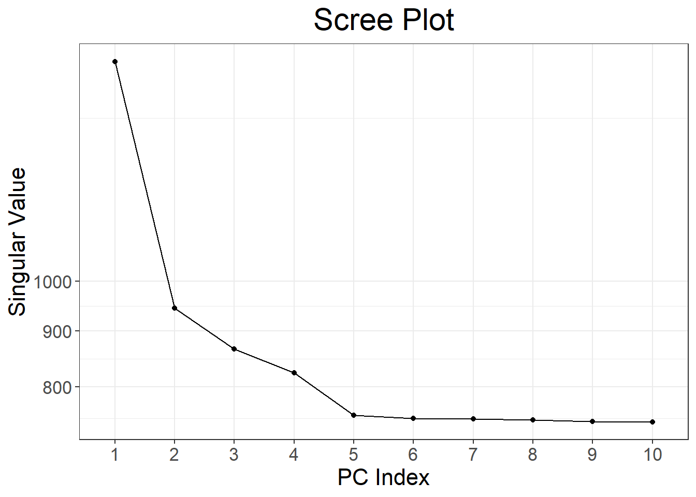
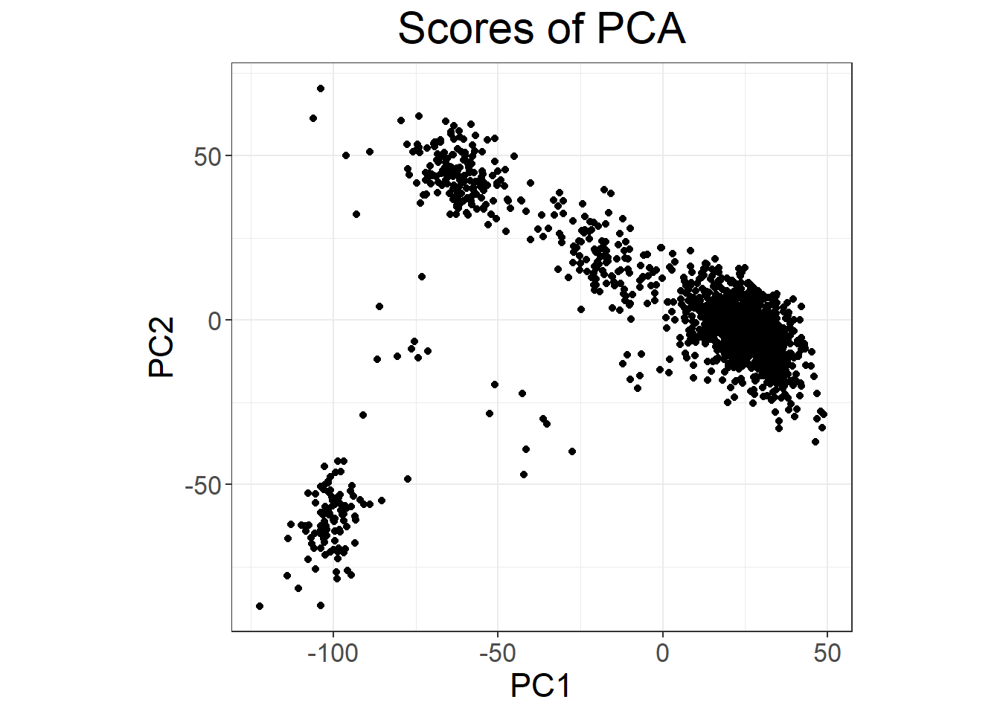
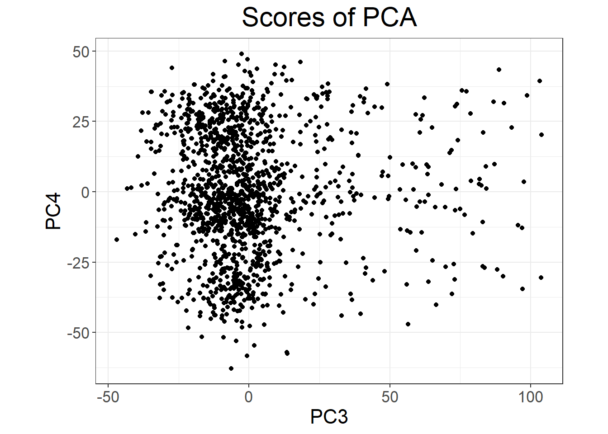
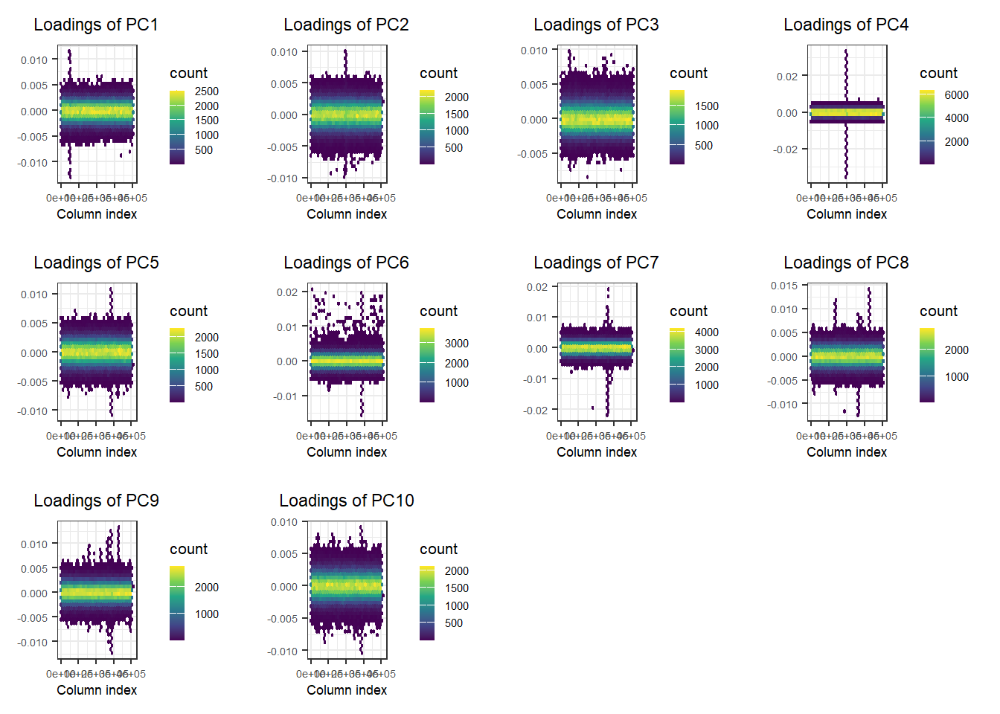
What is going on with PC4?
the_max <- which.max(abs(svd$v[, 4]))
plot(svd, type = "scores", scores = 3:4) +
aes(color = as.factor(G[, the_max])) +
labs(color = "Genotype at most influential SNP") +
guides(color = guide_legend(override.aes = list(size = 3))) +
theme(legend.position = "bottom",
legend.text = element_text(margin = margin(r = 6)))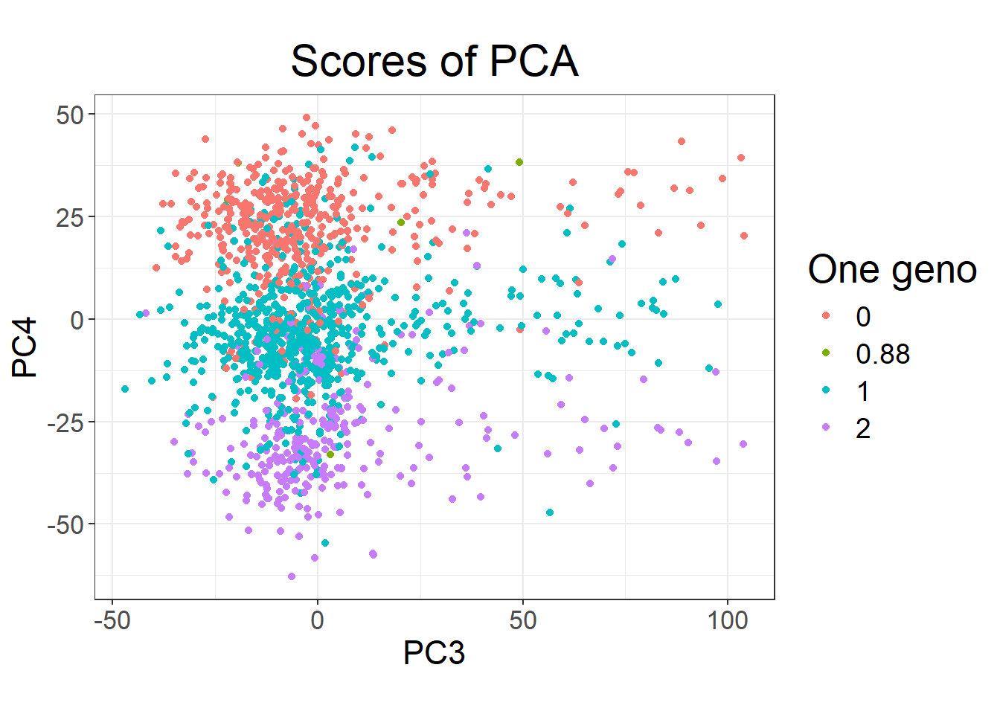
PC4 is basically capturing variation in a block of LD (the peak you see for loadings of PC4) and is then very correlated to genetic variants in this region.
You really want to avoid using PCs that capture LD e.g. as covariates in GWAS because it will cause some collider bias (Grinde, Browning, Reiner, Thornton, & Browning, 2024; Privé, Arbel, Aschard, & Vilhjálmsson, 2022).
To avoid capturing LD in PCA, it has been recommended to perform some pruning (removing variants too correlated with one another) AND remove some known list of long-range LD regions (that can still be captured by PCA, even after a stringent pruning step) (Abdellaoui et al., 2013; Price et al., 2008). But this is not enough; this is exactly what the UK Biobank did (Bycroft et al., 2018), and this how the PC loadings of the 40 PCs they provide look like:

I recommend using only the first 16 PCs provided by the UK Biobank (Privé, Luu, Blum, et al., 2020). If you want to compute PCs yourself, I recommend using the autoSVD functions I developed that perform an automatic detection and removal of long-range LD regions.
4.3 Best practices for PCA of genetic data
There can be many steps to properly perform a PCA; you can find more about this in Privé, Luu, Blum, et al. (2020). Let’s have a look at the corresponding tutorial from the bigsnpr website.
4.4 Exercise
Let’s reuse the data prepared in 3.3.
Follow the previous tutorial to perform a PCA for this data, using either snp_* functions on the bigSNP object or bed_* functions on the bed file mapped.
Click to see solution
First, let’s get an idea of the relatedness in the data using
library(bigsnpr)
(NCORES <- nb_cores())
plink2 <- download_plink2("tmp-data")
rel <- snp_plinkKINGQC(plink2, "tmp-data/GWAS_data_sorted_QC.bed",
thr.king = 2^-4.5, make.bed = FALSE, ncores = NCORES)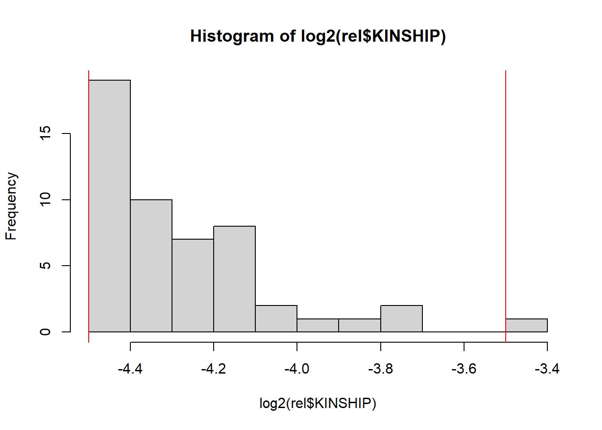
When computing relatedness with KING, LD pruning is NOT recommended. However, it may be useful to filter out some variants that are highly associated with population structure, e.g. as performed in the UK Biobank (Bycroft et al., 2018). For example, see this code.
Relatedness should not be a major issue here. Let’s now compute PCs.
All the code that follows could be run on the bigSNP object we made before. Nevertheless, to showcase the bed_* functions here, we will run the following analyses on the bed file directly.
obj.svd <- runonce::save_run(
bed_autoSVD(obj.bed, k = 12, ncores = NCORES),
file = "tmp-data/PCA_GWAS_data.rds")#> user system elapsed
#> 80.42 1.28 392.85
#> Code finished running at 2025-06-10 13:41:05 CEST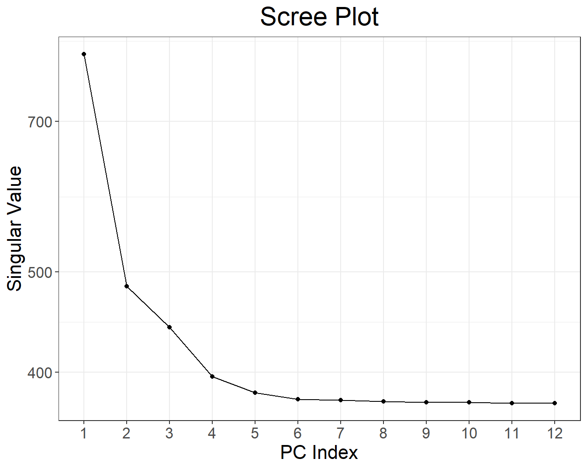
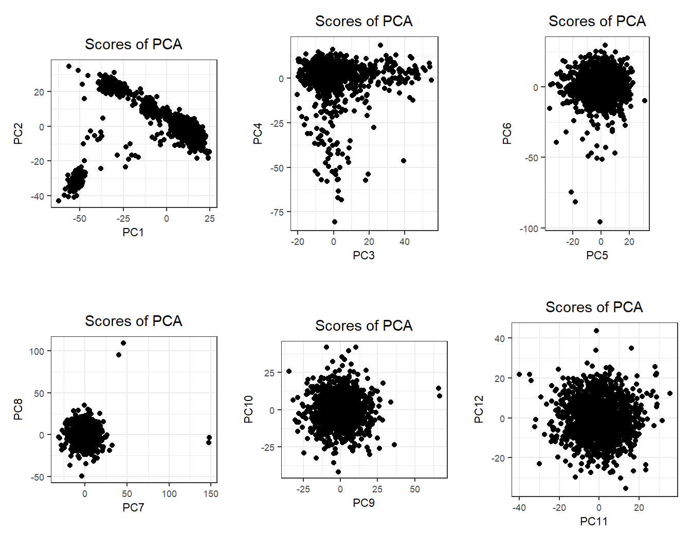
There is some population structure (maybe up to 6 PCs). You should also check loadings to make sure there is no LD structure (peaks on loadings):
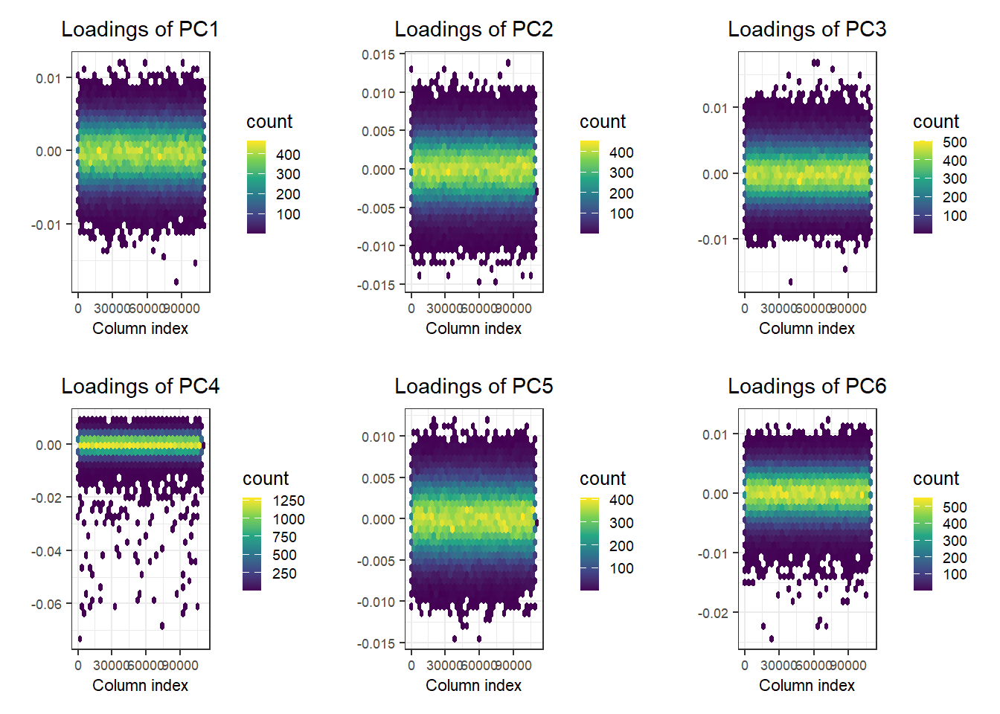
No peaks, but loadings of PC4 are a bit odd.
If you expect the individuals to mostly come from one population (e.g. in a national biobank), you can simply use a robust distance to identify a homogeneous subset of individuals, then look at the histogram of log-distances to choose a threshold based on visual inspection (here I would probably choose 4.5).
PC <- predict(obj.svd)
ldist <- log(bigutilsr::dist_ogk(PC[, 1:6]))
hist(ldist, "FD"); abline(v = 4.5, col = "red")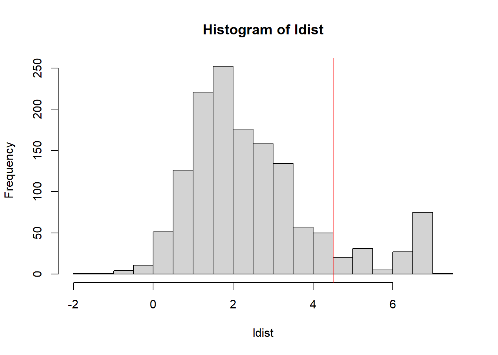
library(ggplot2)
source("https://raw.githubusercontent.com/privefl/paper4-bedpca/master/code/plot_grid2.R")
plot_grid2(plotlist = lapply(1:4, function(k) {
k1 <- 2 * k - 1
k2 <- 2 * k
qplot(PC[, k1], PC[, k2], color = ldist, size = I(2)) +
scale_color_viridis_c() +
theme_bigstatsr(0.6) +
labs(x = paste0("PC", k1), y = paste0("PC", k2), color = "log-distance") +
coord_equal()
}), nrow = 2, legend_ratio = 0.2, title_ratio = 0)#> Warning: `qplot()` was deprecated in ggplot2 3.4.0.
#> This warning is displayed once every 8 hours.
#> Call `lifecycle::last_lifecycle_warnings()` to see where this warning was
#> generated.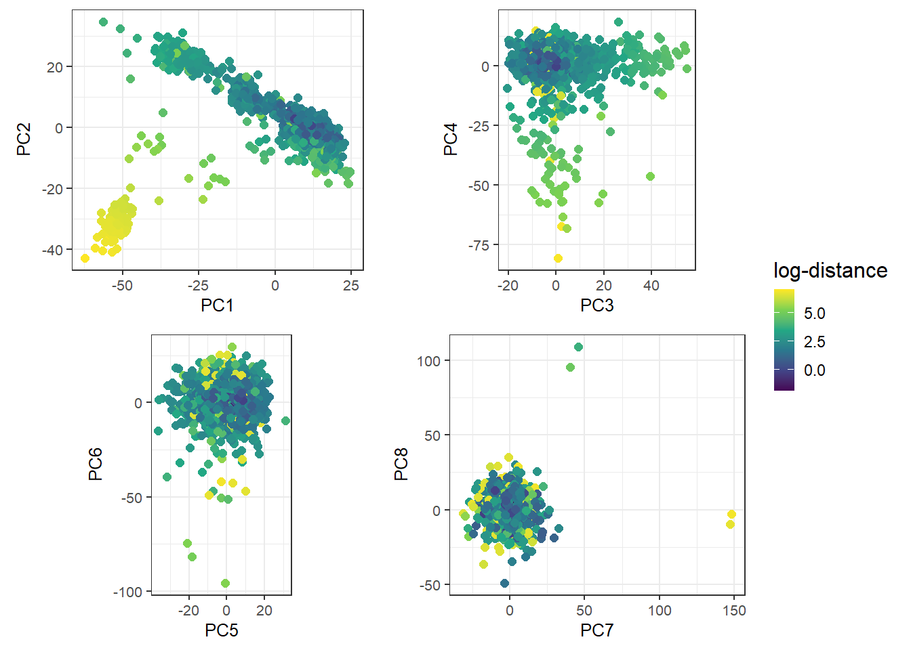
4.5 Ancestry inference
It would be nice if we could get a better sense of the ancestry of these individuals. To achieve this, we can project this data onto the PCA space of many known population groups defined in Privé (2022) (based on the UK Biobank and some individuals from the 1000 Genomes).
all_freq <- bigreadr::fread2(
runonce::download_file(
"https://figshare.com/ndownloader/files/38019027", # subset for the tutorial (46 MB)
# "https://figshare.com/ndownloader/files/31620968", # for real analyses (849 MB)
dir = "tmp-data", fname = "ref_freqs.csv.gz"))
projection <- bigreadr::fread2(
runonce::download_file(
"https://figshare.com/ndownloader/files/38019024", # subset for the tutorial (44 MB)
# "https://figshare.com/ndownloader/files/31620953", # for real analyses (847 MB)
dir = "tmp-data", fname = "projection.csv.gz"))
# coefficients to correct for overfitting of PCA
correction <- c(1, 1, 1, 1.008, 1.021, 1.034, 1.052, 1.074, 1.099,
1.123, 1.15, 1.195, 1.256, 1.321, 1.382, 1.443)#> 'data.frame': 301156 obs. of 26 variables:
#> $ chr : int 1 1 1 1 1 1 1 1 1 1 ...
#> $ pos : int 752566 785989 798959 947034 949608 1018704 1041700 1129672 1130727 1165310 ...
#> $ a0 : chr "G" "T" "G" "G" ...
#> $ a1 : chr "A" "C" "A" "A" ...
#> $ rsid : chr "rs3094315" "rs2980300" "rs11240777" "rs2465126" ...
#> $ Africa (West) : num 0.307 0.179 0.765 0.493 0.437 ...
#> $ Africa (South) : num 0.417 0.233 0.737 0.414 0.352 ...
#> $ Africa (East) : num 0.547 0.493 0.608 0.597 0.261 ...
#> $ Africa (North) : num 0.662 0.645 0.427 0.762 0.319 ...
#> $ Middle East : num 0.794 0.821 0.317 0.886 0.295 ...
#> $ Ashkenazi : num 0.775 0.84 0.203 0.899 0.298 ...
#> $ Italy : num 0.806 0.864 0.243 0.903 0.357 ...
#> $ Europe (South East): num 0.842 0.872 0.201 0.935 0.408 ...
#> $ Europe (North East): num 0.783 0.825 0.203 0.967 0.38 ...
#> $ Finland : num 0.812 0.831 0.224 0.969 0.483 ...
#> $ Scandinavia : num 0.819 0.843 0.228 0.964 0.412 ...
#> $ United Kingdom : num 0.839 0.872 0.2 0.963 0.401 ...
#> $ Ireland : num 0.86 0.887 0.202 0.973 0.387 ...
#> $ Europe (South West): num 0.828 0.867 0.216 0.932 0.347 ...
#> $ South America : num 0.775 0.722 0.324 0.928 0.244 ...
#> $ Sri Lanka : num 0.749 0.753 0.384 0.967 0.293 ...
#> $ Pakistan : num 0.781 0.79 0.347 0.943 0.338 ...
#> $ Bangladesh : num 0.799 0.808 0.33 0.975 0.325 ...
#> $ Asia (East) : num 0.887 0.758 0.319 0.953 0.191 ...
#> $ Japan : num 0.855 0.67 0.397 0.974 0.167 ...
#> $ Philippines : num 0.874 0.845 0.224 0.989 0.212 ...#> 'data.frame': 301156 obs. of 21 variables:
#> $ chr : int 1 1 1 1 1 1 1 1 1 1 ...
#> $ pos : int 752566 785989 798959 947034 949608 1018704 1041700 1129672 1130727 1165310 ...
#> $ a0 : chr "G" "T" "G" "G" ...
#> $ a1 : chr "A" "C" "A" "A" ...
#> $ rsid: chr "rs3094315" "rs2980300" "rs11240777" "rs2465126" ...
#> $ PC1 : num 8.73e-05 5.91e-05 3.81e-05 8.08e-05 9.40e-05 ...
#> $ PC2 : num -1.25e-04 -1.22e-04 1.54e-04 -1.01e-04 2.02e-05 ...
#> $ PC3 : num -5.23e-05 -1.25e-05 1.02e-05 -3.68e-05 1.37e-04 ...
#> $ PC4 : num -3.58e-05 1.01e-06 3.73e-05 -1.24e-05 -1.17e-04 ...
#> $ PC5 : num 2.69e-06 -7.52e-06 4.28e-05 4.53e-05 1.52e-04 ...
#> $ PC6 : num 3.22e-05 2.57e-05 -1.12e-05 1.91e-05 1.76e-04 ...
#> $ PC7 : num -1.64e-05 1.86e-05 -1.21e-04 5.86e-05 1.39e-04 ...
#> $ PC8 : num 2.03e-05 7.16e-05 -1.05e-04 1.00e-05 3.29e-05 ...
#> $ PC9 : num -7.71e-05 -3.57e-05 2.06e-05 -1.10e-05 1.57e-04 ...
#> $ PC10: num 7.27e-06 1.28e-05 1.65e-05 1.68e-05 1.78e-05 ...
#> $ PC11: num 1.35e-04 4.22e-05 -1.22e-05 -5.77e-05 -1.60e-04 ...
#> $ PC12: num -6.57e-05 -4.03e-05 4.44e-05 -2.68e-06 7.79e-05 ...
#> $ PC13: num -6.45e-05 -1.94e-05 5.16e-05 3.27e-05 5.64e-05 ...
#> $ PC14: num -3.13e-05 9.18e-09 -4.06e-05 2.15e-05 -1.59e-04 ...
#> $ PC15: num 1.16e-05 -5.76e-06 1.68e-05 -1.26e-06 -7.81e-05 ...
#> $ PC16: num 6.42e-05 6.47e-05 -4.77e-05 2.51e-05 -9.73e-07 ...Match variants between obj.bed and all_freq using snp_match().
For the variants matched, further remove the variants with more than 5% of missing values.
Click to see solution
# match variants between the two datasets
library(dplyr)
matched <- obj.bed$map %>%
transmute(chr = chromosome, pos = physical.pos, a1 = allele1, a0 = allele2) %>%
mutate(beta = 1) %>%
snp_match(all_freq[1:5]) %>%
print()#> chr pos a0 a1 beta _NUM_ID_.ss rsid _NUM_ID_
#> 1 1 752566 G A -1 2 rs3094315 1
#> 2 1 785989 T C -1 4 rs2980300 2
#> 3 1 798959 G A 1 5 rs11240777 3
#> 4 1 947034 G A -1 6 rs2465126 4
#> 5 1 949608 G A 1 7 rs1921 5
#> 6 1 1018704 A G -1 8 rs9442372 6
#> [ reached 'max' / getOption("max.print") -- omitted 301150 rows ]Some datasets may have the convention that a0 = allele1, a1 = allele2, therefore all effects or allele frequencies are reversed (after matching).
# further subsetting on missing values
counts <- bed_counts(obj.bed, ind.col = matched$`_NUM_ID_.ss`, ncores = NCORES)
hist(counts[4, ])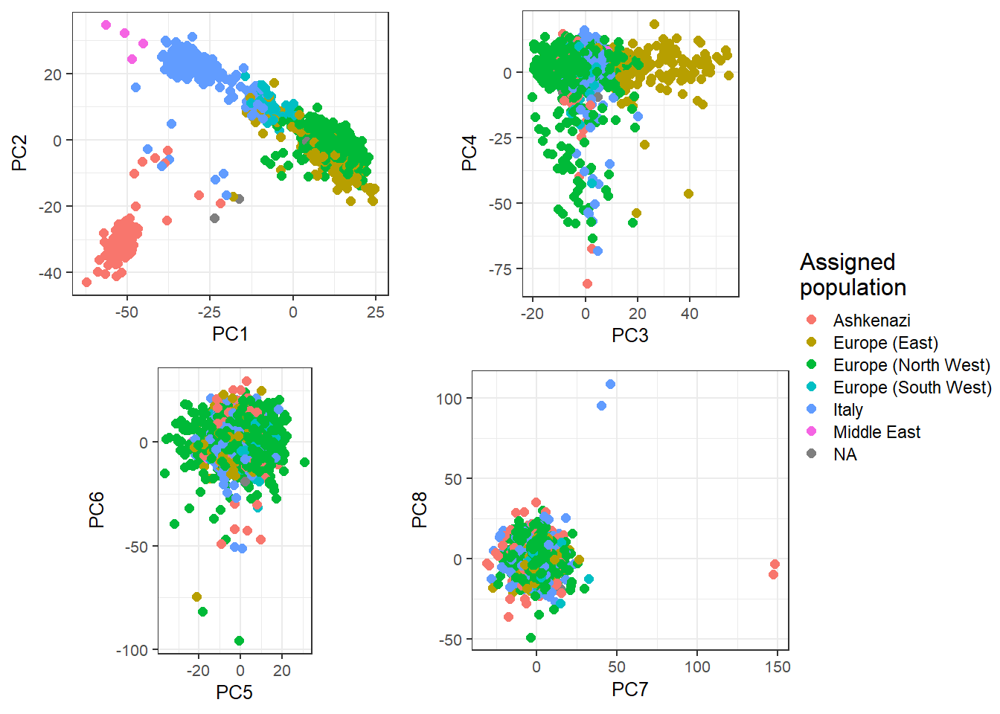
# projection matrix
proj_mat <- as.matrix(projection[matched2$`_NUM_ID_`, -(1:5)])
# reference allele frequencies
ref_mat <- as.matrix(all_freq [matched2$`_NUM_ID_`, -(1:5)])
# centers of reference populations in the PCA
all_centers <- crossprod(ref_mat, proj_mat)# project individuals (divided by 2 -> as AF) onto the PC space
all_proj <- apply(sweep(proj_mat, 2, correction / 2, '*'), 2, function(x) {
bed_prodVec(obj.bed, x, ind.col = matched2$`_NUM_ID_.ss`, ncores = NCORES,
# scaling to get G if beta = 1 and (2 - G) if beta = -1
center = 1 - matched2$beta, scale = matched2$beta)
})When is it needed to use the correction? Why can’t we use these provided PC loadings to project the UK Biobank individuals?
We can then assign each individual to their closest center:
# distance of individuals from each reference population (the center)
all_sq_dist <- apply(all_centers, 1, function(one_center) {
rowSums(sweep(all_proj, 2, one_center, '-')^2)
})
THR <- 0.002 # you can adjust this threshold
thr_sq_dist <- max(dist(all_centers)^2) * THR / 0.16
# gather some groups
group <- colnames(all_freq)[-(1:5)]
group[group %in% c("Scandinavia", "United Kingdom", "Ireland")] <- "Europe (North West)"
group[group %in% c("Europe (South East)", "Europe (North East)")] <- "Europe (East)"
# assign to closest cluster, when close enough
cluster <- apply(all_sq_dist, 1, function(sq_dist) {
ind <- which.min(sq_dist)
if (sq_dist[ind] < thr_sq_dist) group[ind] else NA
})
table(cluster, exclude = NULL) # 3 NAs -> almost all assigned#> cluster
#> Ashkenazi Europe (East) Europe (North West)
#> 110 148 872
#> Europe (South West) Italy Middle East
#> 45 219 4
#> <NA>
#> 3plot_grid2(plotlist = lapply(1:4, function(k) {
k1 <- 2 * k - 1
k2 <- 2 * k
qplot(PC[, k1], PC[, k2], color = cluster, size = I(2)) +
theme_bigstatsr(0.6) +
labs(x = paste0("PC", k1), y = paste0("PC", k2), color = "Assigned group") +
coord_equal()
}), nrow = 2, legend_ratio = 0.25, title_ratio = 0)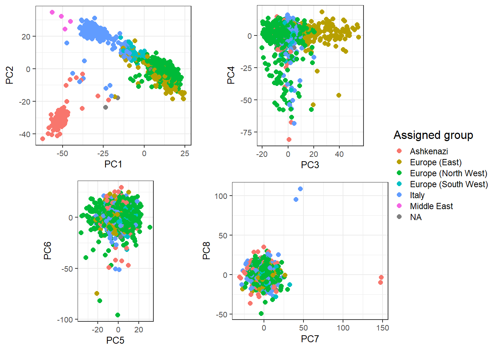
These are mostly European individuals. PC4 is definitively a bit odd.
Try to find out what’s going on with PC4.